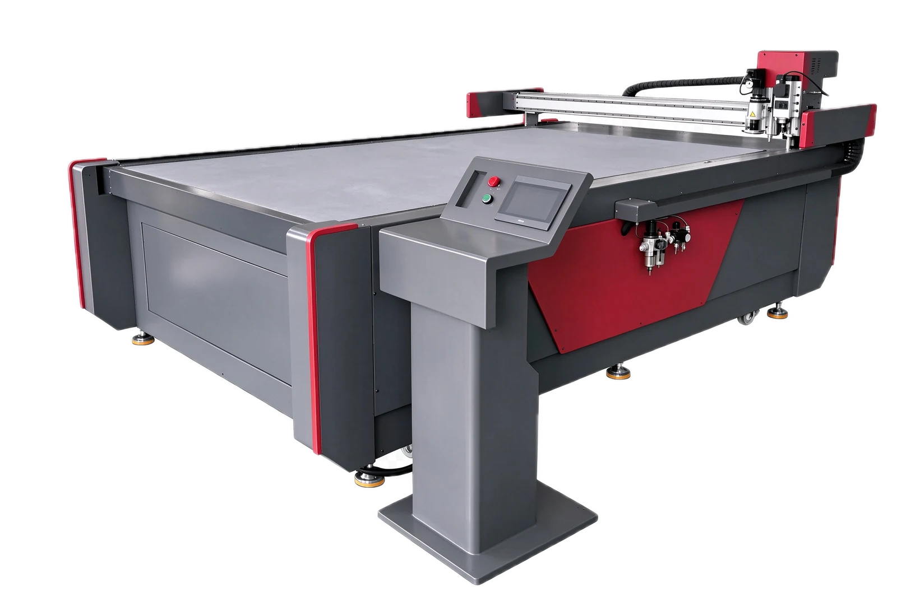
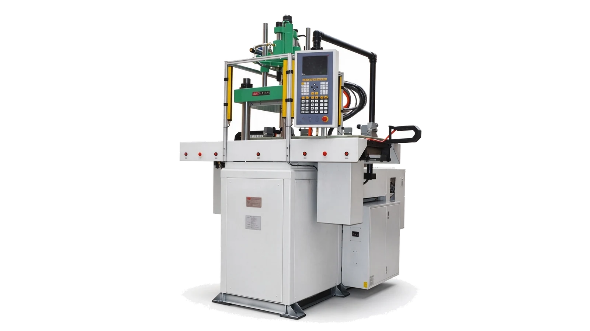

Complementary Machines
Machines that complement a board cutting cell.

Sheet metal & laser · cutting
Fiber Laser Cutting Machine
Cuts the metal frames and brackets around the board parts.

Sheet metal & laser · knife
Oscillating Knife Cutter
Cuts soft board and foam without a rotating tool.

Plastic & molding
Injection Molding Machine
Molds the plastic parts that the fixtures hold.